İkinci Meşrutiyet yıllarında Durkheim’in sosyolojide metot ya da yöntem sorununun yanı sıra Osmanlı düşüncesini derinden etkileyen eseri “işbölümü” üzerine yazmış olduğu doktora teziydi. İşbölümü aslında klasik iktisat literatüründe geniş yer işgal eden bir konuydu. Ama bunu sosyolojiye taşıyan Durkheim oldu. Osmanlı aydını Durkheim’in “işbölümü” tezine onun izleyicisi başka bir ünlü sosyolog sayesinde ulaştı. Célestin Bouglé, Türkiye’de ilk yayımlanan sosyoloji kitabının yazarıydı. Qu’est-ce que la sociologie? Mustafa Suphi tarafından İlm-i İctimaî Nedir? başlığıyla 1912 yılında Türkçeye çevrildi ve Osmanlı okurlarına toplumsal işbölümü, terimin ilk şekliyle, “tevzi-i amel”i olarak tanıtıldı.282
Mustafa Suphi ve Sosyoloji
Célestin Bouglé Durkheim’in izinden giden bir sosyologdu. Onun görüşlerini basitleştiren, halkın anlayabileceği düzeye indirgeyen bir yazardı. Özgün görüşlere sahip bir düşünür olmasa da Fransa’da laik okulun yılmaz bir savunucusuydu. Sosyalist Radikal Parti’nin üyesi olarak 1901, 1906 ve 1924 seçimlerine katılmış, iki dünya savaşı arası Fransız sosyolojisini ayakta tutan ender şahsiyetlerden biri olarak tarihe geçmişti.283Cumhuriyet kurulmadan önce, Nisan 1923’te İstanbul’a gelerek Darülfünun ile Union Française’de birer konferans verecek, Necmeddin Sâdık bu konferanslar üzerine Yeni Mecmua’da uzun bir makale yazacaktı.284Ziya Gökalp, Célestin Bouglé’nin bu kitabı aracılığıyla Durkheim’in “toplumsal işbölümü” tezleriyle tanışacak ve solidarist ya da tesanütçü, dayanışmacı bakış açısını geliştirme olanağı bulacaktı.
Günümüzün sosyoloji literatüründe II. Meşrutiyet yıllarında Durkheim-Le Play çelişkisinin mevcudiyeti vurgulanıyorsa da Türkiye’de uzun yıllar sosyal ve beşeri bilimler denildiğinde ilk akla gelen Durkheim oldu. Selanik’te yayımlanan Yeni Felsefe Mecmuası ile birlikte Osmanlı literatürüne giren Durkheim Cumhuriyet yıllarında da etkisini sürdürdü. 60’lı yıllarda Marx-Engels ve Lenin’e kadar çeviri dünyasında Durkheim hâkim konumdaydı. Osmanlı’da ilk bilinen eseri Sosyolojik Yöntemin Kuralları sosyolojiyi ayrıcalıklı kılacak çalışması olacaktı. Yeni Felsefe Mecmuası bu kitaptan esinlenerek Durkheim sosyolojisini okurlarına tanıtmış ve tüm yayın hayatı boyunca bu eserden yola çıkarak “yeni hayat”ı inşa etmişti. Çeviri olarak Durkheim’in Türkçe ilk makaleleri yine Meşrutiyet yıllarında İctimaiyyat Mecmuası’nda yer aldı.285İctimaiyyat Mecmuası Cihan Harbi yıllarında yayımlanan düzeyi yüksek akademik bir dergiydi. Darülfünun’un İctimaiyyat Dârü’l-mesaîsi, yani sosyoloji bölümü tarafından yayımlanıyordu. Ziya Gökalp, Halim Sâbit, Necmeddin Sâdık, M. Zekeriya, Mehmed Emin, Ahmed Emin derginin yazarlarıydı. Sayfa sayısına vurulduğunda dergide en geniş yeri Émile Durkheim işgal ediyordu.
Altı sayı yayımlanan İctimaiyyat Mecmuası’nın her sayısında Durkheim’in çevirileri vardı. Bu çeviriler üç başlık altında toplanmıştı. İlki dört sayı devam eden “Aile İctimaiyyatı: Fucûrun Nehyi ve Menşe’leri” Necmeddin Sâdık’ın çevirisiydi.286Yine üç sayı art arda yer alan “İctimaiyyat Tarihi: On Dokuzuncu Asırda Fransa’da İctimaiyyat” yazısı ana hatlarıyla iki “devre”den oluşuyordu. İlk devre Saint Simon ve Auguste Comte’u kapsıyordu. İkinci devre ise 1870 sonrasına hasredilmişti. Bu çeviri de Necmeddin Sâdık tarafından yapılmıştı.287Üçüncü çeviri ise Sadreddin Bey’in yaptığı “İlm-i Terbiyye ve İctimaiyyat”tı.288
Durkheim sosyolojisinin temel eserleri 1910’lu ve 20’li yıllarda Türkiye’de artık biliniyor ve peyderpey çevirileri yapılıyordu. Özellikle 1920’li yıllarda Durkheim sosyolojisi çevirilerle önemli bir yol kat edecekti. Cumhuriyet’in ilk yılında De la division du travail social, Türkiye Cumhuriyeti Maarif Vekâleti yayını olarak A. Midhat [Metya] tarafından İctimai Taksim-i Amel başlığıyla Türkçeye çevrilecekti.289Eserin İngilizcesinin bundan dokuz yıl sonra çıktığı düşünülürse Türkiye’de Durkheim’e ne denli önem verildiği açıkça görülecekti.290Aynı yıllarda Hüseyin Cahid [Yalçın], Durkheim’in Les Formes élémentaires de la vie religieuse: le système totémique en Australie adlı eserini iki cilt olarak Din Hayatının İbtidaî Şekilleri başlığıyla Oğlumun Kütüphanesi’nden çıkaracaktı.291Üç yıl sonra Hüseyin Cahid’in bir başka çevirisi, 1927’de Ahlak Terbiyesi yayımlanacaktı.292Bu eser Durkheim’in ölümünün ardından L’Education morale başlığıyla derlenip 1925 yılında literatüre kazandırılmıştı.293Eğitimde ahlakın önemini vurgulayan bu eser, Durkheim’in 1902-1903 senesinde Sorbonne’da terbiye üzerine verdiği ilk derslerdi.294Bu eserin de İngilizcesi Türkçesinden tam 34 yıl sonra çıkacaktı.295
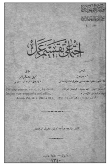
De la division du travail social, Türkiye Cumhuriyeti
Maarif Vekâleti yayını olarak A. Midhat [Metya] tarafından
İctimai Taksim-i Amel başlığıyla Türkçeye çevrilecekti.
Ahlak Terbiyesi’nden bir yıl sonra, 1928’de, bu kez M. Fehmi’nin çevirisiyle Durkheim’in Edükasyon ve Sosyoloji296 adlı eseri yayımlandı.297Bir öncekiler gibi bu eserin de İngilizcesi yıllar sonra, Türkçe baskısından 28 yıl sonra basılacaktı.298Durkheim’in Leçons de sociologie – Physique des moeurs et du droit adlı eseri ise Fransa’dan önce ilk kez Fransızca olarak Türkiye’de, İstanbul Üniversitesi Hukuk Fakültesi yayını olarak çıkmıştı.299Eser Hüseyin Nail Kubalı’nın, Durkheim’in yeğeni, ünlü sosyolog ve antropolog Marcel Mauss’dan temin ettiği ders notlarından oluşuyordu. Bundan böyle bu eserin gerek Fransa’daki baskılarında, gerekse İngilizce çevirisinde önsöz olarak Hüseyin Nail Kubalı’nın giriş yazısı yer alacaktı. Kitabın İngilizcesi ilk kez 1957 yılında yayımlandı.300Türkiye’de özellikle Cumhuriyet’in ilk yıllarında geniş yankı uyandıran İntihar başlıklı eseri ise 1927 yılında Felsefe ve İctimaiyyat Mecmuası’nda kısmen çevrilmiş, okurlara Hilmi Ziya [Ülken] tarafından tanıtılmıştı.301Kitabın tamamının çevirisi ancak 1992 yılında Türkçeye kazandırılacaktı.302
Ziya Gökalp ve Halkçılık
Türkçülük, bir anlamda, II. Meşrutiyet aydınlarını halka yöneltmişti. “Halka doğru” ilkesi kısa sürede edebiyatta da etkisini göstermiş, halkın birikimine açılarak, ulusal değerlere yer vererek yeni bir evreye girmişti.303Önce halkın anlayabileceği sade bir dil gerekiyordu. Edebiyatçılar için “halka doğru” gidişin ilk koşulu buydu. Yazı diliyle konuşma dili örtüşecek, insanlar konuşulan dille yazacaklardı. Ali Canib, Ömer Seyfeddin ve Ziya Gökalp’in başını çektikleri “Yeni Lisan” hareketi yabancı terkipleri kullanmamayı, Türkçesi bulunan yabancı sözcükler yerine Türkçelerini yeğlemeyi öneriyordu. Bugünkü Türkçenin temellerini atan bu akım Genç Kalemler dergisinin öncülüğünde yol almıştı. “Yeni lisan”ı benimseyen halkçılığın bir sonraki durağı “milli edebiyat”tı. “Milli edebiyat”a göre roman ve öykülerde yerli konular işlenecek, halkın yaşamı vurgulanacaktı. Şiirde aruz yerine hece ölçüsü benimsenecek, halk edebiyatının şiir biçimleri ve türleri şairin esin kaynağını oluşturacaktı. Bu arada, edebiyat Anadolu’ya açılıyor, Anadolu görünümleri, köy yaşamı yansıtılmaya çalışılıyordu. Bu açılımın ilk ürünlerinden biri Ebubekir Hâzım [Tepeyran]’ın kaleme aldığı Küçük Paşa’ydı. Ardından Refik Halid [Karay] Memleket Hikâyeleri’nde aynı yaklaşımı benimsemişti. Anadolu insanının sorunları, tutkuları, sevinçleri, elemleri artık Türk edebiyatının uğraş alanları içinde yer alıyordu. Toplumsal sorunlar Fecr-i Aticilerin “sanat şahsi ve muhteremdir” ilkesine üstün gelmiş, “halka doğru” ilkesi ulusal edebiyatın doğuşuna yol açmıştı.
Falih Rıfkı Zekâ dergisinde kullandığı sözcükle “halkçılık”ın isim babası olsa da, onu sahiplenen ve bir fikir hareketi olarak günümüze değin devamını sağlayan Ziya Gökalp’ti. Tanzimat sonrası her Osmanlı aydını gibi Ziya Gökalp de Batı’ya bakarken bir ikilem içersindeydi. Nitekim bu ikilem, diğer bir deyişle Doğu mistisizmiyle Batı pozitivizmi, inşa ettiği halkçılık anlayışına da yansımıştı. Tarihsel nedenlerle “toplumsal sınıf” olgusuna yabancı, bir ölçüde meslek zümreleri ürünü “esnaf” kavramını benimseyen Osmanlı geleneği ile Durkheimci toplumsal işbölümü ilkesi Gökalp’in düşüncesinde kolaylıkla uyum sağlayabilmişti.30419. yüzyılın ikinci yarısı ve 20. yüzyılın ilk evreleri Batı’da sınıf kavgalarının giderek yükseldiği bir dönemdi. Gökalp’in bu gelişmelerden etkilenmemesi olanaksızdı. Bu nedenle, solidarizmle arasında bağdaşmaz çelişkiler bulunan toplumsal sınıf kavramını toplum projesinde dışlayacak ve yerine bütünleyici, birleştirici, birbirleriyle dayanışma içersinde bulunan meslek zümrelerini koyacaktı. Ona göre mesleki teşkilatlara dayanan “siyasî ve ictimai halkçılık” ilkesi, sınıflı toplumlar ertesi uygarlığın benimseyeceği “meslek devri”nin temel göstergesi olacaktı.305
Sınıflı toplumlarda, değişik sınıflar birbirini istismar eder ya da imha etmeye kalkardı. Örnek vermek gerekirse, yeryüzünde burjuvazi emekçi sınıfını istismarla meşguldü. Buna karşılık Avrupa’nın birçok ülkesinde kuramsal düzeyde, Bolşevik Rusyası’nda ise uygulama aşamasında, işçi sınıfı burjuvaziyi yok etmeye çabalıyordu. Demek ki bir toplum içinde sınıflar, aralarında uzlaşma imkânı olmayan düşman zümrelerdi. Oysa, meslek zümreleri birbirine rakip ve düşman olacak yerde, bilakis yekdiğerine son derece muhtaçtı. Toplumda terzi kunduracısız, kunduracı terzisiz, fırıncı kasapsız, kasap fırıncısız, şair filozofsuz, filozof şairsiz, doktor avukatsız, avukat doktorsuz kalmayı hiçbir zaman istemezdi. Bu “toplumsal” meslekler birbirleri için gerekliydi. O halde sınıflar kalkıp, onların yerine meslek zümreleri güçlü bir şekilde oluşunca Sosyal Darwinizm de son bulacak, toplumda barış hüküm sürecekti.306Bu anlayış, üç aşağı beş yukarı Mustafa Kemal’in 1931 programı hazırlıkları sırasında halkçılık için yaptığı tanımdı. 1931 seçimleri öncesi yayımladığı, toplumsal sınıf kavramını reddeden, çalışma zümreleri ya da “mesaî erbabı”nı benimseyen bildirisi Gökalp’in sınıf yerine meslek zümrelerini öneren yukarıdaki satırlarını anımsatıyordu.307
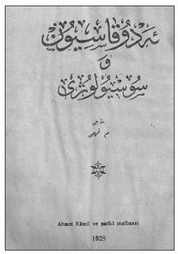
Durkheim’in Education et Sociologie adlı eserinin
Edükasyon ve Sosyoloji başlığıyla Türkçe çevirisi
1928 yılında M. Fehmi tarafından yapılacaktı.
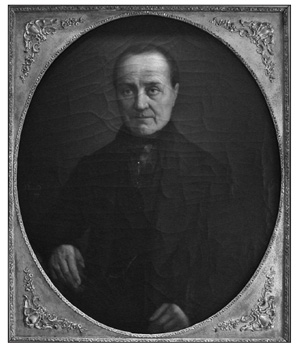
19. yüzyılın ortalarında biyolojik bulgulardan güç alan antropoloji diğer sosyal ve beşeri
bilimler için de zemin hazırlamıştı. Böylece Auguste Comte ile birlikte sosyoloji ilk adımlarını
atıyor, yüzyılın sonlarına doğru sosyal bilimler tasnifinde kalıcı bir yer ediniyordu.
Gökalp’in solidarizm üzerine yazıları ağırlıklı olarak İttihatçı yayın organı Yeni Mecmua’da yer aldı. Yeni Mecmua “Meşrutiyet rönesansı”nın yayın organı sayılabilirdi. Özenli bir dergiydi ve Osmanlı entelektüel düzeyinin vardığı evreyi ifade ediyordu. 12 Temmuz 1917’de yayımlanan ilk sayısından 29 Eylül 1918’de yayımlanan 62. sayısına kadar hemen her sayıya Gökalp katkıda bulundu. Dergide şiir dahil toplam 67 kez Gökalp imzası yer aldı. Solidarizm ve halkçılık ile ilgili görüşleri büyük ölçüde bu dergide işlendi. Yeni Mecmua’nın 14 Şubat 1918 tarihli 32. sayısı İttihatçı ideoloğun “Halkçılık” başlığını taşıyan yazısına yer veriyordu. İlginçtir ki aradan bunca yıl geçmesine ve birkaç kez Gökalp külliyatı yayımlama girişiminde bulunulmasına karşın, Gökalp’in bu yazısı Gökalp külliyatlarında yer almadı. Gökalp’in ölümünün 50. yıldönümü nedeniyle Kültür Bakanlığı’nın yayımladığı ve Gökalp’in tüm eserlerini kapsamayı amaçlayan Gökalp külliyatı, yazarın yazılarının büyük çoğunluğunu yeni harflere kazandırmıştı. Ancak Yeni Mecmua’da yer alan “İctimai mezhepler ve İctimaiyyat”, “Turan Nedir?”, “Halkçılık”, “Milletçilik ve Cemaatçilik”, “Rusya’daki Türkler Ne Yapmalı?” başta olmak üzere birçok makalesini içerecek cilt ya da ciltler çıkarılmamıştı. Oysa bu yazılar, Gökalp’in düşünce sisteminin omurgasını oluşturuyordu ve Gökalp’in Cumhuriyet’i ne denli etkilediğini araştırmacılara göstermekte önemli bir açılım sağlayacağı için Gökalp’in en önemli yazılarıydı.308 “Halkçılık” makalesi bir anlamda bugün bile Cumhuriyet Halk Partisi’nin programında yer alan halkçılık düşüncesinin manifestosuydu.
Gökalp, halkçılık sözcüğünü geniş bir kesime kazandıran ve bilfiil İttihat ve Terakki bünyesinde savunan ve taşraya gönderdiği Cemiyet tamimlerinde halkçılığın uygulanmasına önayak olan kişiydi. Gökalp’in düşün sisteminde Fransız solidarizmi Rus Narodnizmine oranla daha baskındı. İttihatçı düşünürün Batı kapitalizmini sorgulayıcı üslubu Cumhuriyet’in inşa sürecinde de etkili olmuş, çok partili döneme kadar damgasını vurmuştu. Mustafa Kemal Atatürk’ün halkçılıkla ilgili görüşlerinin esin kaynağı Ziya Gökalp’ti. Aşağıda sözü edilecek olan 1920 tarihli “Halkçılık Programı”, 1931 CHF Programı’nda ve 1937’de Anayasa’da altı oktan biri olan “halkçılık umdesi” Gökalp’in düşüncesinin devamı sayılabilirdi.
“Halkçılık” başlığını taşıyan uzun makalede Gökalp, tarihsel bir süreci ele alıyor ve son kertede “siyasî halkçılık” ve “ictimaî halkçılık”a yer veriyordu. Siyasî halkçılık teriminin yanına açtığı parantezde Fransızca karşılığını da koyarak bir anlamda halkçılıktan neyi murat ettiğini açıklığa kavuşturuyordu. Siyasî halkçılık onun için “démocratie politique”, yani siyasal demokrasiydi. “İctimaî halkçılık”ın da bu koşullarda “démocratie sociale” yani sosyal demokrasi olması gerekirdi. Ama o tarihlerde sosyal demokrasinin Marksizmle olan kan bağı, Bolşevik partilerin sosyal demokrasiyi kullanmaları, Ziya Gökalp’i sosyal demokrasi sözcüğünü kullanmaktan alıkoyuyordu. Bu nedenle makalesinde “ictimaî halkçılık”a Batı’daki karşılığı olarak solidarizmi koyacaktı. Diğer bir deyişle, sınıf çatışmasından arınmış toplumsal tabakaların uzlaşmasını öneren Fransız sosyalizan anlayışını, o günlerdeki Fransız Radikal Partisi’nin söylemini benimseyecekti. Ancak, burjuvazinin olmadığı bir ortamda tek dayanak noktası esnaftı. Bu nedenle korporatif anlayışa meyledecek ve makalesinin son bölümünü “meslek devri”ne ayıracaktı. Bu seçenek Durkheim’in tezleriyle de uyumluydu. Gökalp’in esin kaynağı Durkheim’in Toplumsal İşbölümü başlıklı eseri de “meslek” evresiyle son buluyordu. “Meslek devri” meslek zümrelerinin dayanışması anlamına geliyor, sınıflardan arınmış bir toplum düzenini hedefliyordu.
Gökalp, makalede Türklerin ve Osmanlıların geçmişini irdelerken Batı’daki yapıyı sürekli gündemde tutuyordu. Batı feodalitesiyle Osmanlı düzenini karşılaştırarak Osmanlı’nın merkezi yapısının çözülüşünü farklı açılardan değerlendiriyordu. Tanzimat onun için “siyasî halkçılık”ın başlangıç evresiydi. Ama yine de siyasal bağlamda eşitlikçi toplumda pürüzler vardı. Bu pürüzlerin müsebbibi kapitülasyonlardı. Osmanlı toplumunda imtiyazlı kılınan “ecnebî”ler ve onların koruması altındaki “gayrimüslim” cemaatler “siyasî halkçılık”ın gerçekleşmesini engelliyordu.
Gökalp son kertede bugün literatüre “guild socialism” olarak geçen kapitalizm öncesi bir sosyalizan yapıyı savunuyordu. II. Meşrutiyet yıllarında yükselen milliyetçi anlayış, oluşmakta olan yeni yapılanma ile Batı arasına mesafe koymayı gerektiriyordu. Selanik’ten beri “yeni hayat” Batı’yı yoz bir toplumsal yapı olarak algılıyordu. Öte yandan 19. yüzyıl emek-sermaye çelişkisine çözüm arayan solidarist görüşler de kapitalizme karşı tavır alınmasına neden oluyordu. Sermaye birikiminin olmadığı bir ortamda esnaf ön plana çıkıyordu. O nedenle Gökalp Cihan Harbi sonuna kadar küçük esnaftan yana tavır koyacak, sanayileşme konusunda kaygılarını birçok kez vurgulayacaktı. Ancak bu görüşleri ölümünden önce Küçük Mecmua’da yazdığı makalelerde son bulacak, Cihan Harbi ertesi yeni bir dünya kurulurken Gökalp de görüşlerini revize ederek sanayileşmenin kaçınılmazlığını vurgulayacaktı. Ancak bu aşamada da sermaye birikimi sorunu gündeme geliyordu.
II. Meşrutiyet yıllarında halk sözcüğü bir anlamda bugünkü ulus ya da millet sözcüğüyle eşanlamlı kullanılıyordu. Halk ve halkçılık, Gökalp’in düşün sisteminin önemli bir boyutuydu. İttihatçı düşünür, birçok Meşrutiyet aydını gibi evrimden yanaydı; “tekâmül”ü ilke edinmişti. Toplumsal yaşamın aşamaları ancak evrim yasalarının ışığında izlenebilirdi. II. Meşrutiyet’te sosyoloji ya da “ictimaiyyat”, bir anlamda evrimci pozitivizminin bir uzantısıydı. Jön Türk Devrimi’yle gündeme gelen gelişme-ilerleme, ya da “terakki” sorunsalı ulus-devlet inşası döneminde bir dizi iç çelişkinin oluşmasına yol açmıştı. Osmanlı’nın kabuk değiştirdiği, yeni yapılanma sürecinde var olan değerlerini sorguladığı bir evrede gündeme gelen ulusçuluk olgusu, kısa bir süre sonra Cihan Harbi ve onu izleyen bunalımlı on yıllarda Osmanlı ve Cumhuriyet aydınını sürekli bir ikilem içine sokacaktı. Gelişme bir açıdan eski “değerler”in yitirilişi anlamına geliyordu. Osmanlı’nın kendine özgü “ahlak”ı sorgulanmaya başlanıyor, görece eşitçi, popülist bir evre bir kenara bırakılarak, toplumsal katmanlara açık, birikimi gözeten bir evreye geçiliyordu. İşte böyle bir ortamda sosyal demokrasinin ilk nüveleri gözleniyor, servetin adil dağıtımı, ya da “imtiyazsız, sınıfsız bir kitle” özlemi giderek ağır basıyordu. Ancak, bu evrede ahlak sorunsalı ekonominin önüne geçiyor, tıpkı Durkheim’de olduğu gibi Gökalp’te de ahlak sosyolojisinin önü açılıyordu.
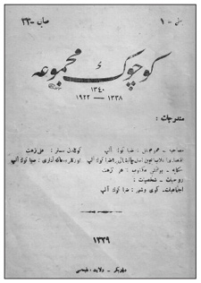
Gökalp Cihan Harbi sonuna kadar küçük esnaftan yana tavır koyacak, sanayileşme
konusunda kaygılarını gündeme getirecekti. Ancak savaş sonrası yeni bir dünya
kurulurken Küçük Mecmua’da sanayileşmenin kaçınılmazlığını vurgulayacaktı.
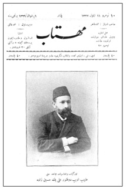
Halka Doğru dergisi yazarlarından İttihat ve Terakki Merkez-i Umumi üyesi
Hüseyinzade Ali [Turan], Türkçülükle halkçılığın “mürşidi” olarak görülüyor, Rusya’daki
Panislavizm ve sosyalizmi Türkiye’ye uyarlayan kişi olarak gösteriliyordu.
Ulus-devlet inşa sürecini Cumhuriyet’e taşıyacak olan Halk Fırkası’ndaki “halk” sözcüğünün kaynağı da II. Meşrutiyet’ti. Bu arada halk sözcüğü kuzeyde 1917 devrimi ertesi Sovyet Rusya’da da popüler bir nitelik kazanmıştı. Bu husus Halk Fırkası’nın kuruluşu sırasında göz ardı edilemeyecek bir etmendi. Hatta Cumhuriyet’in kuruluş evresinde “halk cumhuriyeti” terimi bile gündeme gelmişti. Bu yıllarda “millet” sözcüğü de giderek çağdaş anlamını kazanıyor, geçmişin “cemaat”inden arınıyordu. Rusçada “halk” ve “millet” sözcükleri aynı sözcükle, “narod”la ifade ediliyordu. Türkiye’de ise “halk” ve “millet” sözcükleri Tek Parti döneminde giderek farklılaştı. “Millet” sözcüğü siyasal bir bağlamda önem kazandı; toplumsal içeriğini ise “halk” sözcüğünde buldu. Milliyetçilik ve halkçılık bundan böyle rejimin ve partinin altı ilkesi arasında ayrı ayrı yer aldı.
Jön Türk entelektüellerinin Rusya’daki Narodnik hareketinden etkilendikleri belirtilmişti. Birçok Müslüman göçmen Rusya’nın fikir ortamını Osmanlı topraklarına taşımıştı. Musa Akyiğitzade, Yusuf Akçura, Ahmed Ağaoğlu, Hüseyinzade Ali Turan bunların önde gelenleriydi. Cumhuriyet döneminin en etkin Müslüman göçmenlerden biri Sadri Maksudi [Arsal] idi. Rusya’dan gelen fikir hareketinin toplumsal boyutu en az milliyetçilik kadar önemliydi. Narodnik çizgisi sosyalizan bir boyut da taşıyordu. Nitekim Osmanlı ortamında milliyetçilikte de “sosyalist” düşünüş öğeleri zaman zaman kendini göstermişti. Sosyalist düşüncenin alanı Marksizmin katı kurallarının dışına çekildikçe geçmiş daha bir renkleniyordu. Cihan Harbi ertesi İttihatçıların Bolşeviklere sempatiyle bakmalarını salt oportünizm ya da “muvazaa” olarak değerlendirmek Jön Türk düşüncesinin farklı boyutlarını göz ardı etmek anlamına geliyordu. İttihatçı gelenekte Batı’dakilerle örtüşen ve ayrışan bir toplumcu öğeyi görmezlikten gelmek, ulusçuluğu salt sağ ideoloji olarak algılamak bir tarihi yanılgı olurdu. Bu açılım Durkheim ve Ziya Gökalp için de geçerliydi. Ziyaeddin Fahri Fındıkoğlu’nun Ziya Gökalp’e sosyalist düşünürler dizisinde yer vermesi bir rastlantı olmasa gerekirdi.309
Solidarizm ya da “Tesanütçülük”
Solidarizmin etkisiyle II. Meşrutiyet düşünürlerinin liberalizmle sosyalizmi uzlaştırıcı görüşleri sosyal devlete yönelik öğeler içermekteydi. Hatta bir anlamda Türkiye’de sosyal demokrasinin temelleri Meşrutiyet yıllarında atılmıştı. Bundan böyle devlet toplumsal yaşama aktif olarak katılabilecek, kamu adına girişimlerde bulunabilecek, toplumsal mülkiyetten sağlanan gelirler sosyal hizmetlere hasredilecekti. Müdahaleci devlet, ekonomik beklentilerini “milli iktisat”la gerçekleştirirken geniş anlamda toplumsal içeriğini “solidarizm”de buluyordu. Bu nedenle II. Meşrutiyet ve Tek Parti Cumhuriyet Türkiyesi’nin toplumbiliminde en gözde sözcük “tesanüt” olageldi. “Tesanüt” dayanışma anlamına geliyordu. Fikir hareketi olarak “tesanütçülük” Cihan Harbi yıllarında dergilerin “ictimaiyyat” sütunlarını süsledi. Tesanütçülük, yukarıda belirtildiği gibi ilk kez uluslararası sosyoloji kongresi nedeniyle Ulum-ı İktisadiyye ve İctimaiyye Mecmuası’nda yer almıştı. 1908 ertesi sosyoloji ve iktisat ders kitaplarında solidarizme yer verilmişti.310Başlangıçta “meslek-i teavün” ya da “teavün mesleği” olarak Türkçeye çevrilen solidarizm, II.Meşrutiyet ve Tek-Parti yılları yazınına genellikle “tesanütçülük” diye geçti. Bir ara, dil devrimi ile birlikte “bağlılık”a dönüştü. Günümüz sosyoloji kitaplarında ise “dayanışmacılık” solidarizmin karşılığı olarak kullanılır oldu. Kısaca “tesanütçülük” ya da solidarizm İttihatçı ideologların gündeme getirdikleri ve Tek-Parti Türkiyesi’nin de benimsediği bir toplumsal fikir hareketine dönüştü. Her ne kadar Meşrutiyet’in ilanı ertesi Osmanlı yazınında solidarizmden söz edilmeye başlanmışsa da, solidarizmin geniş yankı uyandırdığı dönem Cihan Harbi’nin kargaşa ortamıydı. İttihatçı çevrelerin yayın organı Yeni Mecmua, “tesanütçülük” adı altında solidarizme geniş yer ayırmıştı. Dergide Tekin Alp on iki kez makalelerine “Tesanütçülük” başlığı atmıştı. Gökalp’in yine aynı dergide geliştirdiği “halkçılık” düşüncesi solidarizmden esinlenmişti.
Solidarizm, III. Cumhuriyet Fransası’nın bir anlamda resmi ideolojisiydi. Radikal Parti’nin benimsediği bir dünya görüşüydü. Filozof-politikacı, bir ara başbakan, Léon Bourgeois başta olmak üzere, Alfred Fouillée, Alexandre Millerand, Charles Seignobos, Ferdinand Buisson, Charles Gide, Gustave Geffroy gibi birçok düşünür bu görüşün çevresinde toplanmıştı. Léon Bourgeois 1887 yılında Radikal Parti’den milletvekili seçilmiş ve partinin teorisyenlerinden biri olmuştu. 1902 yılında Millet Meclisi’nin başkanı olacaktı. Ferdinand Buisson, La Politique radicale adlı eserinde partinin “ışıldayan” tarihini ele alırken parti programının temel ilkelerini sayıyordu: Bireyin ekonomik kölelikten ve entelektüel sınırlamalardan kurtuluşu, devlet ve kilisenin ayrımı, mali yükümlülüklerin adil dağılımı, adaletin ve adli yönetimin köklü reformlara tabi tutulması ve eğitimin her türlü dini inançtan azade kılınması bu ilkelerin belli başlılarıydı. Sosyalizmi iflah olmaz bir düşman olarak görmüyor, ama sosyalizmin ütopyalarını reddediyordu. Kimi hizmetlerin sosyalleştirilmesine yeşil ışık yakılıyor, ancak aynı zamanda özel mülkiyete sahip çıkıyordu. Bu ünlü eserin önsözünü Léon Bourgeois yazacaktı. Léon Bourgeois belagati ve ikna gücüyle “solidarité” ya da dayanışma sözcüğünü 1906 yılında yayımladığı kitabına başlık yapacaktı. Kısa sürede birçok baskı yapan halka yönelik bu kitapta toplumsal yaşamın sadece rekabet ve en güçlünün üstünlüğü üzerine kurulu olmadığını, bir dizi kesimin başarılarının kendi aralarında uyum sağlamalarıyla yüceldiğini kaydediyordu. Solidarizmi bir tür toplumsal felsefeye dönüştürüyor ve dayanışmayı gerçek dünyada sınayarak, siyasal planda pratik sonuçlara varıyordu. Bu sonuçlar arasında her düzeyde parasız eğitim, iş saatlerinin sınırlanması, herkes için asgari geçim düzeyi, tekellerin ve monopollerin devre dışı bırakılması ve artan oranda gelir vergisi yer aldığı gibi o tarihte sosyalistlerin de gündemini oluşturan unsurlar vardı.311
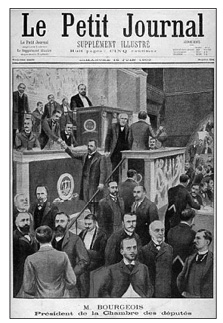
3. Cumhuriyet Fransası’nda Alfred Fouillée, Alexandre Millerand,
Charles Seignobos, Ferdinand Buisson, Charles Gide, Gustave Geffroy
gibi birçok düşünür filozof-politikacı, bir ara başbakan
Léon Bourgeois’nın çevresinde solidarizmi savunmuştu.
Genellemek gerekirse solidarizm, 19. yüzyılın ekonomist ve sosyalist öğretilerinin saptadıkları toplumsal sorunlara tutarlı bir çözüm getiremediklerini ileri sürüyordu. Ekonomistler, çabanın bireyi yükselttiğini, gayretin onu güçlü kıldığını, rekabetin bir ayıklama ve ilerleme unsuru olduğunu vurguluyorlar; ancak “bırakın yapsınlar, bırakın geçsinler” düsturuyla adaleti yadsıyorlardı. Salt maddi kaygılarla, adalete arka çıkan ve toplumu mutluluğu paylaştıracak bir güç olarak gören kolektivistler ise insanın tek varlık nedeni olan özgürlüğünü yitirmesine yol açacak sözde bir adalet yurdunu [cité de justice] otoriter yöntemlerle kurmaya kalkışıyorlardı. Solidarizm, her iki öğretinin sakıncalarını giderecek, adaletle özgürlüğü aynı potada bağdaştıracak, ekonomizmle sosyalizmi uzlaştıracak bir çözüm peşindeydi. Diğer bir deyişle, teşebbüs serbestisi ve mülkiyetin dokunulmazlığına gölge düşürmeksizin liberalizmle sosyalizm arası bir “orta yol” arıyordu. Ancak, birçok yazar, bu arada Muslihiddin Âdil, solidarizmle sosyalizm arasında yakın bağ kuruyordu. Nitekim solidarizm tanımını yaparken Muslihiddin Âdil “son zamanlarda sosyalizmden şeklen ayrı, fakat esas itibariyle müşterek bir meslek-i mahsus vücud bulmuştur” diyordu.312
Solidarizm, ekonomide devlet müdahaleciliğini öneren, çalışanları ve güçsüzleri gözeten sosyal mevzuatı gündemine alan, toplumsal yaşamda sınıf çatışmasının gereksizliğine inanan, çelişkiden arınmış, uzlaşma esasına dayalı organik dayanışmayı [tesanüdü] benimseyen, laik eğitimi savunan, pasifist, uzlaşmacı bir anlayıştı. Tabii solidarizmin Batı’daki konumuyla Osmanlı’daki işlevi farklıydı. Gelişmiş bir kapitalist toplumda solidarizm toplumsal yapıyı veri olarak alıyor, kapitalizmin doğurabileceği sosyal adaletsizlikleri parlamenter yoldan gidermeyi amaçlıyordu. Evrimci, ahlakçı, Bentham faydacılığını Fransa’ya yansıtan bir düşünceydi. Solidarist çevre sosyalizme görece dost bir tavır alıyordu. Ancak, toplumsal değişiklik solidarizmin gündeminde yoktu. Öte yandan, solidarizmde eşitsizliğin kaynağına inilmeksizin, sosyal adalet ilkesi benimseniyordu. Bu nedenle bazı çevreler, solidarizmi bir tür liberal sosyalizm olarak niteliyordu. Ancak, sosyalizmin politik silahı sınıf çatışması solidarizmde yerini işbirliği ve dayanışma ilkelerine bırakıyordu.313
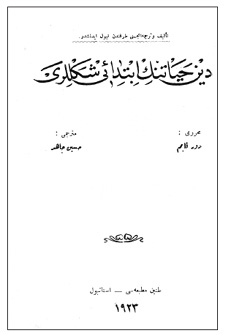
1923-1924 yıllarında Durkheim’in Les Formes élémentaires de la vie religieuse:
le système totémique en Australie adlı eserini Hüseyin Cahid [Yalçın], iki cilt
olarak Din Hayatının İbtidaî Şekilleri başlığıyla Türkçeye kazandıracaktı.
Gökalp’e göre, solidarizmin Osmanlı topraklarındaki anlamı doğal olarak Batı’dakini aşıyordu. Daha bir devrimci nitelik taşıyordu. Solidarizm ona göre “ictimaî halkçılık”tı. Siyasal demokrasinin siyasal düzeyde gerçekleştirdiği eşitliği iktisadi alanda uygulamaya çalışıyor, diğer bir deyişle, solidarizmde “iktisadî sınıflar”ın kaldırılması amaçlanıyordu. Gökalp’te solidarizm sosyalizme çok daha yakın duruyordu. Bir anlamda kapitalizmin sınıfsal “kara delik”ini aşan ve eşitçi bir toplum kuran bir fikir hareketiydi. Gökalp, bireycilikle toplumculuk arasında “tezat” olmadığını ileri sürüyordu. Bireycilikle toplumculuğu uzlaştırarak her ikisini de aynı potada eriten yeni bir toplumsal öğretide, tesanütçülükte karar kılıyordu. Bireyciler salt bireysel ya da özel mülkiyeti, toplumcular ise toplumsal ya da kamu mülkiyetini benimserken, tesanütçüler her iki mülkiyet ilişkisini de gündemlerine almışlardı.
Gökalp, toplumun bu tür bir düşünce akımını benimseyebilmesi için geçmiş kültür kodlarına başvurma gereği duyuyor, kendince sürekliliği vurguluyordu. Solidarizm, Gökalp’e göre Türk hukukunun doğasında vardı. Bu nedenle tesanütçülük, ulusal bir düşünce akımı, “milli bir meslek”ti. Özellikle, geleneksel Osmanlı toprak hukuku bunun somut kanıtıydı. Osmanlı Arazi Kanunnamesi’nde “tasarruf” ferdî ya da bireysel mülkiyeti, “rakabe” ise ictimaî ya da toplumsal mülkiyeti ifade ediyordu. Osmanlı toprak hukuku her iki tür mülkiyet ilişkisini de kapsıyordu. Gökalp, solidaristlerin uzlaştırıcı mülkiyet ilişkilerini salt toprağa hasretmediklerini, üretim aracı niteliği taşıyan diğer “mülk”lere de yaydıklarını ileri sürüyordu: Keza ormanlar, sular, madenler, demiryolları, gemiler gibi fabrikalar da, toprak örneğinde olduğu gibi bu iki mülkiyet ilişkisi ışığında ele alınmalıydı.314Bu tür bir uzlaşı, diğer bir deyişle liberalizmle sosyalizmi ortak paydada bir araya getirme girişimi, o günlerde giderek revaç bulmaya başlayan sosyal devlete yönelik öğeler de içeriyordu. O tarihlerde Sovyet Rusya’daki gelişmeler de bundan farklı bir anlayışın ürünü değildi.
Gökalp’e göre bir fabrika işletilmez, atıl bırakılırsa bu fabrika üzerindeki özel mülkiyet “sâkıt” olurdu; kalkardı. Türk hukukuna göre, bireysel tasarruf bir tapu, yani “ictimaî bir memuriyet” niteliğindeydi. Birey üretim araçlarını gereğince kullanmazsa, tıpkı toprakta olduğu gibi devlet müdahale etme gereği duyardı. Çünkü tüm üretim araçlarının “rakabesi”, gerçek sahipliği devlete aitti. Bireyin bu üretim araçlarında ancak “tasarruf” hakları bulunuyordu. Bu nedenle devlet, gerek görürse, bireye ait tasarruf hakkını kaldırabilir, bedelini ödeme koşuluyla, rakabesi kendisine ait olan toprak ve fabrikaları kamulaştırabilirdi. Bu yolla tüm üretim araçlarını “ictimaileştirmek” ya da kamusallaştırmak, veya “nâ-ehil ellerden alıp ehliyetli ellere vermek” mümkündü. Nitekim, solidarizmden esinlenen gerçek halkçılık, kişi özgürlüğüyle toplumsal adaleti, özel mülkiyetle toplumsal mülkiyeti uzlaştırmayı amaçlıyordu.315Bireycilik ve toplumculuk, Gökalp’in deyimleriyle “ferdcilik”le “ictimaicilik” telif edilmeli, bireysel ya da özel mülkiyetle [ferdî mülkiyet] toplumsal mülkiyet [ictimaî mülkiyet] birlikte ele alınmalıydı. Bu bağlamda kişi özgürlüğüyle toplumsal adalete eşit ağırlık tanımak gerekiyordu. İşte tesanütçülük ya da solidarizm bunu gerçekleştiriyordu. Bu arada Osmanlı kültür kodları da buna son derece uygundu.
Gökalp, toplumsal adaleti gerçekleştirmek için, Batı iktisatçıları ve toplumbilimcileri arasında yaygın kullanımı olan “artık değer”den yola çıkıyordu. Gökalp “artık değer” için “fazla temettü”yü kullanıyordu. “Fazla temettü” Fransızca “plus value”nün o günkü Türkçesiydi. Devlet toplumsal hayata aktif olarak katılabilecek, toplumsal mülkiyetten sağlanan “artık değer”ler sosyal hizmetlere sarf edilebilecekti. Toplumsal mülkiyet kabul edilerek kamusal girişimlerden doğacak ve topluma ait olacak “artık değer”ler önemli bir gelir oluşturacak, bu gelir ise “toplumsal adalet” için, mağdur sınıfları sefaletten kurtarmak ve belirsiz geleceklerini güvence altına almak için değerlendirilecekti. Genel nitelikte sosyal sigorta, kamu yardımları, hayır kurumları ve tüm çocuklar için eğitimin parasız ve yatılı olması bu kaynaklardan sağlanabilirdi.316Gökalp için “artık değer” kavramı, kendi deyişiyle “fazla temettü”ler toplumun birikimiydi; toplumsal mülkiyet gereğiydi. Devlet her türlü sosyal hizmeti, vergiler kanalıyla topladığı bu “artık değer”lerle yerine getirebilirdi. Sosyal sigorta, parasız eğitim ve benzeri hizmetler bundan böyle devletin görevleri arasına giriyordu.317
Görülebileceği gibi Gökalp’in solidarizmi sosyal devlete yönelik öğeler içeriyordu. Liberal ya da “jandarma” devlet Gökalp için yetersizdi. Devlet toplumsal hayata katılmalı, düzenleyici, yönlendirici işlevler üstlenmeliydi. Bu nedenle toplumsal mülkiyet kaçınılmazdı. Gökalp’e göre ülkede bireycilikle toplumculuğu bağdaştırmak ve bireysel ya da özel mülkiyetle toplumsal mülkiyeti birlikte ele almak gerekiyordu. Böylece kişi hürriyetiyle toplumsal adalet eşit oranda kabul görmüş olacaktı. Tüm bu görüşler Cihan Harbi yıllarında kristalleşmişti. Dünyada genel gidişat da bu doğrultudaydı. 19. yüzyılın küreselleşme evresi sona ermiş, 1914 ile birlikte küresizleşme gündeme gelmişti. Savaşan ülkelerin finansman sorunları klasik devlet anlayışının bir kenara bırakılmasına neden olmuştu. Orduları beslemek, silahla donatmak ancak devletin iktisadi faaliyetlere doğrudan müdahalesiyle mümkündü. Hemen tüm savaşan ülkelerde devletçi bir anlayış benimsenmişti. Bu arada savaşın neden olduğu toplumsal çöküntüye çözüm bulmak da devlete düşüyordu. Özellikle savaş sonrası milyonlarca dul, yetim, yoksul aileler ancak devletin ianeleriyle ayakta kalabilecekti. Devlet artık “sosyal” olmak zorundaydı.
Tekin Alp ve “İctimai Siyaset”
Yukarıda belirtildiği gibi, Gökalp’in gündeme getirdiği solidarist anlayış Fransız toplumbiliminden esinleniyordu. “Tesanüt”ü [solidarité] Durkheim daha öğrencilik yıllarında baş tacı etmişti. Meşrutiyet’le birlikte Osmanlı aydını Fransa’daki sosyolojiyi özümleme gereği duymuş, sosyolojiyi okullara kadar sokmuştu. Bu arada, Alman sosyal demokrat fikir hareketinin ilk etkileri Selanik’te Osmanlı aydın çevrelerinde görülmeye başlanmıştı. Almanya’da sosyal devlet anlayışı diğer Avrupa ülkelerine göre çok daha gelişmişti. Bismarck Almanyası’nda giderek güçlenen işçi hareketlerine karşı sosyal politika bir tür panzehirdi. Sosyal politika alanında önemli atılımlar bu ülkede gözleniyordu.
Almanya’yı yakından izleyen İttihatçı ise Moiz Kohen, nam-ı diğer Tekin Alp’ti. Tekin Alp İttihatçı çevrelerin “milli iktisat”a yönelik görüşlerini şekillendirmekte başı çekmişti. Nitekim, Cemiyet onu kendi yarı resmi organlarından İktisadiyyat Mecmuası’nın başına geçirmişti. Milli Mücadele sonrası Tekin Alp, Mustafa Kemal’e de yakın duracak, 1936 yılında Fransızca ve Türkçe ayrı baskı olarak çıkacak olan Kemalizm kitabını yazacaktı. Tekin Alp’in solidarizmi Alman çizgisine oturuyordu. Fransız sosyolojizminden esinlenen Ziya Gökalp’in “mefkûreci” ulusçuluğuna karşı, Alman sosyal demokrat düşüncesinden etkilenen Tekin Alp, ulusçuluğa maddi taban arayışı içindeydi. Türklerin ulus inşa edebilmeleri, “millî vahdet”i sağlayabilmeleri için öncelikle maddi menfaatleriyle manevi hazinelerini ortak paydada bir araya getirmeleri gerekiyordu. Türkçülük akımı, doğduğu tarihten beri manevi unsurları oluşturan dil, edebiyat, sanat ve benzeri alanlarda birlik oluşturarak yol kat etmişti. Oysa maddi menfaatlerle manevi değerler beden ve ruh gibi bir bütündü. Bunları ayırmaya kalkışmak her ikisinin de telef olmasına neden olurdu.
Tekin Alp’in maddi menfaatlerle kastettiği iktisadi gelişmeydi. Ülke iktisaden gelişmedikçe ulus-devlet, “millî vahdet” sağlanamazdı. Manevi değerler “millî hars”la gerçekleşirken maddi menfaatler “milli iktisat”la doğardı.
Bu nedenle Tekin Alp, İttihat ve Terakki’nin milli iktisat politikasını “iktisadî solidarizm” diye tanımlayacak, sermayenin bu birliği sağlamada önemli rol oynadığına dikkat çekecekti. Tekin Alp’e göre birey, aile, cemaat ekonomilerini birbirlerine bağlayan en önemli etmen sermayeydi. Sermaye sayesinde üretim güçleri, değişik iktisadi etmenler bir araya gelir, bunlar toplu bir biçimde ulusun refah ve saadetini sağlardı.318Tekin Alp’in bu görüşleri, İttihat ve Terakki Merkez-i Umumîsi’nin 1916 Kongresi’ne sunduğu raporda da yer alacak, “Heyet-i ictimaiyyemizin müterekkip olduğu fert, aile, cemiyet iktisatlarını bir merkez-i vahdet etrafında toplayan ve bunların yekdiğeriyle tesanüdünü temin ve idare eden millî iktisadın tesis ve inkişafına ait tedâbirle iştigal olunmuştur” denilecekti.319
Yukarıda belirtildiği gibi solidarizmde kişisel çabaların sonucu elde edilen değerlerin bir parçası topluma aitti ve buna “artık değer” deniyordu. Marx’ın sömürü bağlamında kullandığı bu terim solidarizme de girmiş, kişisel çıkarın ötesinde toplumsal bir değeri ifade etmişti. Gökalp’in “fazla-i temettü” diye adlandırdığı topluma ait bu pay, aynen Tekin Alp’te de gündeme gelecekti. Ancak Tekin Alp “artık değer”e farklı bir ad takıyor, “tezâyüd-i kıyem” diyordu. Tezayüd artış, kıyem ise değer anlamına geliyordu. “Fazla-i temettü”den farkı yoktu. Tekin Alp’e göre “artık değer” Alman sosyal demokrasisinin kullandığı bir terimle ifade edilen “ictimai siyaset” gereğiydi. Tekin Alp’e göre bireysel mülkiyetin [ferdî mülkiyet] yanı sıra toplumsal mülkiyetin [cemiyet mülkiyeti] kabulü toplumdaki adaletsizliklerin giderilmesi için bir zorunluluktu. Bireyciler ya da liberaller, “artık değer”i bireysel mülkiyetin hakkı olarak görüyorlardı. Ancak sosyal politika taraftarları ya da solidaristler ise her iki mülkiyet şeklini de kabul ettikleri için bireyin elindeki servetin önemli bir kısmının topluma ait olduğunu, “artık değer” diye nitelen bu toplumsal payın her ne şekilde olursa olsun toplumun huzur ve refahı için topluma mal edilmesi gerektiğini söylüyorlardı.
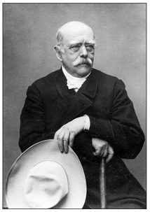
Almanya’da sosyal devlet anlayışı diğer Avrupa ülkelerine göre çok daha önce
gelişmişti. Bunun mimarı Otto von Bismarck’tı. Giderek güçlenen işçi
hareketlerine karşı sosyal politika bir tür panzehir olarak değerlendirildi.
Solidaristler bunu temel ilke olarak benimsemişlerdi. “Artık değer” bireyin kişisel çabasının ötesinde tarihten gelen derinliğiyle toplumsal yaşamın sonucu ortaya çıkıyordu ve bu nedenle topluma ait olması gerekiyordu.320Tekin Alp, Yeni Mecmua ve İktisadiyyat Mecmuası’nda “tesanütçülük” sözcüğünü sosyal politika bağlamında sık sık kullanıyordu. Gökalp’ten farkı Marx’a daha yakın durması ve sınıf analizi yapmasıydı. Son kertede determinist bir anlayışla Osmanlı’da da kapitalizmin kaçınılmazlığından söz ediyordu. Bu nedenle bir an önce önlem alınması kaçınılmazdı. Kapitalizmin panzehiri ise Tekin Alp’e göre “ictimai siyaset”ti.
Tekin Alp’e göre solidarizmin “anavatanı” Almanya idi. Devlet ve toplumu etkin bir konuma getiren solidarizmin esaslarıydı. Almanların tabirince sosyal politika yani “ictimaî siyaset”ti. İtilaf devletlerince militarist bir devlet olmakla itham edilen Almanya kendi topraklarında uyguladığı sosyal siyasetle tüm ileri ülkeleri geri planda bırakmıştı. Ülkenin mutlak çoğunluğunu oluşturan halk sınıflarına geniş ölçekte refah ve saadet sağlamış; onları manen ve maddeten yükseltmişti. Savaş yıllarında toplumsal faaliyet ve solidarizm ilkeleri Almanya’da hızlı bir şekilde yaygınlaştırılmış, devletin hemen hemen tüm tavır ve faaliyetlerine hâkim olmaya başlamıştı. Tüm ileri ülkelerde ve özellikle Almanya’da gerek devletin gerekse toplumun faaliyet ekseni değişmiş ve o güne kadar devlet yaşam kavgasında galipleri tecavüzden masun bulundurmaya çaba sarf etmişken tesanütçülükle birlikte özellikle altta kalan “ahali sınıflarını” gözetmeye başlamıştı. Onlara doğrulabilmeleri için omuz vermiş, toplum denen organizmanın değişik aksamında yaşam kavgası sonucu bozulan ahenk ve dengeyi yeniden kurmaya bütün gücüyle çalışmıştı. Hemen her ülkede yasama ve yürütme güçlerinin temsilcileri toplumda doğal ahenk ve dengenin olmadığı ve olamayacağı kanısına varmışlardı. Ahenk ve dengenin ancak devletin ve toplumun himmet ve gayretiyle bir dereceye kadar kurulabileceği ve bu nedenle “ictimaî siyaset”e giderek önem verilmesi gerektiği vurgulanmıştı.321
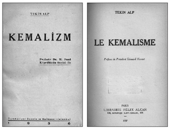
Tekin Alp’in Edouard Herriot ve Fuat Köprülü’nün önsözleriyle Türkçe ve Fransızca yayımlanan
Kemalizm başlıklı eseri üç bölümden oluşuyordu. Bunlar Kemalizmin Doğuşu, Kemalizmin Yolu
ve Kemalizm Doktrini ve İdeolojisi idi.
Cihan Harbi yıllarında ictimai siyaset anlayışı Osmanlı’da, Darülfünun çevresinde de rağbet gördü. İttihatçı hükümet Osmanlı-Alman ittifakının yarattığı dostluğu kültür ve eğitim alanına da kaydırmış, Edebiyat, Fen ve Hukuk fakültelerinde okutulan bir kısım dersler için Almanya’dan öğretim üyesi getirtmişti. Hukuk Fakültesi için çağrılan dört yabancı profesörden ikisi iktisatçıydı. Prof. Flek “ilm-i malî”, Prof. Hoffmann ise “iktisad-ı ictimaî”, “iktisad-ı ziraî” ve “tarih-i mesâlik-i iktisadiyye” derslerini okutuyorlardı. Yabancı profesörlerin yanına çevirmen olarak müderris muavinleri verilmişti. Tekin Alp “ilm-i malî”; Mehmed Emin Bey “tarih-i mesâlik-i iktisadiyye” ve “iktisad-ı ictimaî” derslerinde muavinlik yapıyorlardı. Bu eğitim iki yıl sürmüş, İttihatçıların iktidardan düşmelerinin ertesi 14 Aralık 1918’de yabancı profesörlerin ve Tekin Alp’in Darülfünun’la ilişkileri kesilmişti. Alman profesörlerin yerine Fazıl Bey “ilm-i malî”, Münir Bey “tarih-i mesâlik-i iktisadiyye”, Mehmed Emin Bey ise “iktisad-ı ictimaî” ve “iktisad-ı ziraî” derslerini üstlenmişlerdi. Böylece Alman iktisadi düşüncesi ve sosyal politikası “ictimai iktisat” adı altında Osmanlı ders programlarında yer almış oluyordu.
Bolşevik Devrimi ve İttihatçılar
Türkiye’de solidarizmin tartışıldığı dönemde kuzeyde, Çarlık Rusyası yıkılmış, yerine toplumsal mülkiyet esasına dayanan yeni bir düzen kurulmuştu. Osmanlı solidaristleri, ilgiyle izledikleri bu gelişmeler karşısında Osmanlı’da zaten çökme evresinde gelmiş olan toplumsal düzeni koruyabilmek için sosyalizmle solidarizm arasındaki farkı vurgulamak gereği duymuşlardı. Evet solidarizmde toplumsal mülkiyet vardı. Ama toplumsal mülkiyetin de sınırları vardı. Bireyciliğe karşı olan Bolşevikler ferdî mülkiyeti tümüyle yadsımakta, kolektivizmi, “cemiyet mülkiyeti”ni benimsemekteydiler.322Tekin Alp’e göre Rusya’da birtakım idealistler bireysel mülkiyeti inkâr ederek toplumsal düzeni altüst etmişlerdi. Oysa yapılması gereken toplumsal düzeni çökertmeksizin, bireysel mülkiyetin yanı sıra toplumsal mülkiyeti kabul etmekti. Rus devrimcileri bu şekilde hareket etseydiler bir ölçüde başarı şansına sahip olabilirlerdi.
Bolşeviklerin devrimciliğine karşılık solidarizm taraftarları evrimci bir çizgiden yanaydılar. Kurulu düzeni veri olarak alıyor, toplumsal düzeni sarsacak kökten dönüşümlerden kaçınıyorlardı. Tekin Alp’e göre, solidarizm için yürürlükteki ve geçerli hukuki ve toplumsal düzende “inkılâb”a başvurmaya gerek yoktu. Hukuki ve toplumsal düzen aynen devam etmeli, ancak, toplumsal düzenin işleyişi aksadığı ya da düzende çarpıklıklar doğduğu zaman doğal akışa müdahale etmeliydi. Diğer bir deyişle, düzenin devamı ve korunması, liberalizmde olduğu gibi her şeyin doğal akışına bırakılması, bireyin iktisadi faaliyetinin hiçbir sınırlamaya tabi tutulmaması anlamına gelmiyordu.
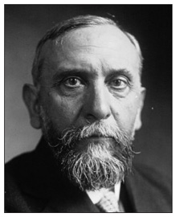
Célestin Bouglé, Durkheim’in izinden giden, onun görüşlerini basitleştiren,
halkın anlayabileceği düzeye indirgeyen bir yazardı. Özgün görüşlere sahip
bir düşünür olmasa da Fransa’da laiklik anlayışının yılmaz bir savunuruydu.
Doğal akış, bireyin özgürlüğünü sağlasa da, zamanla toplumda yer alan muhtelif “halk tabakaları” arasında çıkar çatışmalarına, derin uçurumlara neden olacaktı. Liberalizm bireyin gelişmesine ortam hazırlar, ancak talih ve tesadüfün etkisiyle toplumsal düzende çarpıklıklar doğardı. İşte bu aşamada devlet devreye giriyordu: Devlet bireyin çıkarının değil, toplum düzeninin koruyucusuydu. Bu nedenle, toplumsal düzen çözülmeye başladığı anda devlet müdahale etmeli, toplumsal sınıf ve tabakalar arasında doğal gelişmeden kaynaklanan çarpıklıkları gidermeli, toplumda düzeni, dengeyi, bütünlüğü, türdeşliği olanaklar ölçüsünde korumaya çalışmalıydı. Ancak, bu konuda ifrata kaçmamak gerekiyordu. “Ferdi büsbütün ortadan kaldıran, devleti ikame etmek isteyen sosyalizm”, toplumu tekdüze bireylerden oluşan bir organizmaya dönüştürmek istiyordu. Bu nedenle bireysel mülkiyeti, şahsiyeti yok edip, her şeyi devlete irca ediyor, toplumsal hayattaki doğal farkları gidermeyi amaçlıyordu. Oysa toplum, kendine özgü hayat tarzı, farklı yetenek ve beklentileri olan sayısız bireyden oluşuyordu. Yeknesak, tekdüze bir halk kitlesi toplum değildi. Solidarizm, kişi özgürlüğü ile sosyal adaleti bağdaştırarak bu sorunun üstesinden geliyordu.
Tekin Alp’e göre Cihan Harbi solidarizmin gereğini bir kez daha kanıtlamıştı: Savaşın nedeni “ictimai Darwinizm”di: Birçok ülkede toplumsal sömürü geniş boyutlara ulaşmış, imparatorluklar çıkar kaygısıyla birbirleriyle kapışmıştı. Gücü ellerine geçiren sınıflar emperyalist emeller peşine düşmüşlerdi. Tüm bu gelişmeler dünyayı ve Avrupa’yı dönüştürmüş, küçük bir kıvılcım kıtayı berhava etmeye yetmişti. Oysa bu tür savaşlar solidarizmle önlenebilirdi. İnsanlar, zümreler, muhitler, sınıflar, meslekler için genel çözüm çatışmaktan değil uzlaşmaktan geçiyordu. Bu kategorilerde yer alan farklı öğeler işbölümü sonucu birbirleri için gerekliydi. Uyum içinde çalıştıkları vakit bir organizmanın bütünselliğini oluşturuyorlardı. Çarlık Rusyası’nı deviren Bolşevikler bu gerçeği görememişlerdi. Sınıfları uzlaştıracaklarına sınıf çatışmasını körüklemişlerdi. Bolşevikler, burjuvaziye savaş açacaklarına, mevcut düzeni çökerteceklerine, solidarizmi uygulayıp muhtelif zümreler arasında işbölümü ilkelerince düzeni sağlasalar ve yalnız toplumdaki çarpıklıklara neden olan “ictimai Darwinizm”i ortadan kaldırsalar, yeryüzünde temelleri solidarizm üzerinde yükselen ideal yurdu, “cité idéale”i yaratmayı başarabilirlerdi.323İşte bu noktada Tekin Alp Fransız solidarizmine, Gökalp’e yaklaşıyordu. Meslekçiliğe ya da korporatizme göz kırpıyordu.
İttihatçı çevre Ekim Devrimi’ni toplumsal boyutunun yanı sıra çok daha farklı gerekçelerle de yakından izliyordu. Halkçılıkla eşgüdüm içinde gelişen ve yeni bir ulus-devlet arayışının temellerini oluşturan Türkçülük, Rusya’daki soydaşların kaderiyle ilgilenmeksizin yapamamıştı. Rusya’da kapitalizm 19. yüzyılda iyi kötü gelişmiş, Müslüman unsur arasında da toplumsal sınıf farklılıkları doğmuştu. Çarlık Rusyası’nda bir Müslüman “burjuvazi”den söz edilir olmuştu. Rusya’daki “Türk şubeleri”ne seslenme gereği duyan Ziya Gökalp, “Rusya’daki Türkler Ne Yapmalı?” başlıklı yazısında, sosyalizmin etkin olduğu Rus âleminde Bolşevizmden esinlenen Türkler gereksiz yere kardeş kanı döküyorlardı. Oysa Türk şubelerinin bu tür aşırılıklardan kaçınması gerekiyordu. Gökalp Rusya’daki Türklere sınıf mücadelesini bir kenara bırakıp, tüm halkın yararına olacak solidarizmin ilkelerini benimsemelerini öneriyordu. Böylece, solidarizm sosyalizme bir alternatif olarak gelişecek, öte yandan kapitalizmin ve milliyetçiliğin doğurabileceği toplumsal sorunlara da çözüm getirecekti. Bu bağlamda solidarizmin sosyal adaletçi yönü ön plana çıkıyordu.
Solidarizm ve Devletçilik
Milliyetçilik, halkçılık ve devletçilik Cumhuriyet Türkiyesi’nin II. Meşrutiyet’ten devraldığı üç sacayağı idi. Türkçülük milliyetçiliği simgeliyordu. Narodnik ve solidarist düşünce halkçılığa zemin hazırlamıştı. İttihatçıların milli iktisat politikası ise devletçiliğin provasıydı. Cihan Harbi bir devri noktalıyordu. Savaşla birlikte 19. yüzyılın doğal dengeleri, liberalizm, yüceltilen kapitalizm, milliyetçiliğin yapıcı yönleri bir kenara bırakılmış, dünya bir ateş çemberine dönüştürülmüştü. Savaş 19. yüzyılın emperyal politikalarının çözümsüzlüğüne bir kanıttı. Emperyalizmin yanı sıra gelişmiş ülkelerdeki toplumsal sorunlar sınıfsal yapıların vahimleşen sorunlarının liberal dengelerle çözülemeyeceğini gösteriyordu. Devlet pasif konumundan çıkmalı, aktif görevler üstlenmeliydi. Eskinin jandarma devleti anlamını yitirmiş, sosyal devlet güç kazanmıştı. Kapitalizmin neden olduğu çarpıklıkların üstesinden ancak devlet müdahalesi gelebilirdi.
Tekin Alp’e göre, uygarlıkla kapitalizm uyum içinde gelişiyordu: “Bir millet medeniyet sahasında ne kadar yükselirse kapitalizm dahi o derece kesb-i kuvvet eder” diyordu. Milliyetçilik ise “Muhtelif memleketlerde tezahür ettiği şekilde kapitalizmin kuvvetini tezyid ve takviye etmekten başka bir şeye yaramamış”tı. Savaş diğer ülkelerde olduğu gibi Türkiye’de de servet dağılımında büyük değişikliklere neden olmuştu. Sermaye birikimi sonucu yüzlerce şirket ortaya çıkmıştı. Kısa bir süre sonra diğer ülkelerde olduğu gibi Türkiye’de de büyük girişimler küçük üreticiliği ortadan kaldıracak, bir yanda “güzide, zengin, münevver ve mesut bir zümre-i kalile [azınlık zümre]”, öte yanda “proleter denilen ve her türlü mahrumiyetlere katlanmaya, her türlü eza ve cefaya mahkûm olan milletin ekseriyet-i azimesi [büyük çoğunluğu]” arasındaki uçurum giderek açılacaktı. Bu nedenle, milliyetçilikten, ulusal uyanıştan yalnız kapitalist denilen azınlık zümresi yararlanmış olacaktı.324Nitekim Osmanlı topraklarında görece geri bir ortamda bile sonuç aynıydı. Bu noktada Tekin Alp bir özeleştiride bulunuyordu. İttihatçı yönetim halkı, alnının teriyle geçinen “say ü amel erbabını” düşünmemişti. Onların refahını temin etmek şöyle dursun, haklarını temine yönelik grev girişimlerini engelleyici mevzuat çıkarılmıştı. Bu yasalar yayımlandığı dönemde Osmanlı’da demokrasi, Tekin Alp’in deyişiyle “hükûmet-i avam” hüküm sürüyordu. Milletvekilleri genel oyla seçilmişti ve parlamentarizm yürürlükteydi. “Öyle olduğu halde, halkın, avamın düşmanı olan patronlar ve sermayedar sınıfların lehinde kanunlar neşrolunmuştu.”325
Tekin Alp’e göre, milliyetçilik bu şekilde gelişirse karşısında sosyalizmi bulacaktı. Sosyalizmin ifratçılığından kaçınmak için, kapitalizmin olumsuz etkilerini gidermek gerekiyordu. Türkiye’nin geçmekte olduğu aşamaları daha önce yaşamış ileri Batı ülkeleri, uzun deneyimler sonucu nasyonalizm ile sosyalizm arasında, her iki akımın olumlu yanlarını içeren, olumsuz yönlerini dışlayan üçüncü bir toplumsal akımda karar kılmışlardı. Adını tesanütçülük ya da solidarizm koymuşlardı. Tekin Alp’e göre, Cihan Harbi solidarizm için çok müsait bir ortam yaratmıştı. Savaş sırasında ekonomiler o denli altüst olmuştu ki, barıştan sonra kendi kendine düzelmeleri olanaksızdı. Savaş ertesi liberallerin “laissez faire, laissez passer” ilkesi hiçbir surette uygulama alanı bulamayacaktı. Rekabet serbestisi iktisat âleminin her köşesinde engellerle karşılaşacak, devletin yasalarıyla, devlet müdahalesiyle çatışacaktı.326Savaşla birlikte liberal iktisat politikaları bırakılmış, devlet hemen hemen her ülkede iktisadi hayata yoğun müdahale gereği duymuştu. Bu müdahale anlayışı savaş ertesi de devam edecekti. Devlet, savaşta olduğu gibi, savaş sonrası da ülke iktisadıyla yakından ilgilenecekti. Ülkelerin yeni baştan imar edilmeleri gerekiyordu. Üretimin artırılması, tüketimin kısılması, ödemeler dengesinde açık verilmemesi kaygıları ekonomiye doğrudan müdahaleye ortam sağlıyordu. Ayrıca “harp istikrazları”yla birçok devlet gelecek nesilleri borçlandırmıştı. Nihayet, yüz binlerce harp malulü, dul, yetim ve göçmen devletçe gözetilmeliydi. Bu kesimler serbest rekabet ortamında, kendilerinden daha güçlü katmanlara karşı korunmalıydı. Üretim araçlarının ve ülkenin kaynaklarının dağılımı konusunda önemli dönüşümler gündeme gelecek, böylece devlete solidarizm esaslarını uygulamaya sokma olanağı doğacaktı.
Tüm bu görevler, devletleri solidarizmin ilkelerini benimseyerek, toplumsal çöküntülere yer vermeksizin ekonomileri toparlamaya sevk etmek anlamına geliyordu. Devletlerin iktisadi hayata müdahaleleri solidarizm gereğiydi. Ancak devlet müdahalesinin solidarizm açısından etkin olabilmesi için halkçılığın her alanda uygulanması gerekiyordu: “Halkçılık devresinde kapitalist rolünü ifa edecek olan devlet adamları” emekçilerin hak ve menfaatlerini gözetmek zorunda kalacaklardı. Hükümetin başında yüksek katmanların hukuk ve menfaatlerini savunan adamlar değil, halkı düşünen, halkın refahını gözeten rical bulunacaktı.327Devletin çalışanların hak ve menfaatlerini gözetmesi ancak iktisadi hayata fiilen girmesiyle gerçekleşebilecekti: “Devlet kısmen olsun, büyük tüccar, büyük sanatçı olursa, kapitalist rolünü bizzat oynamaya başlarsa, hiç şüphe yok ki iş vericileri ile iş alıcıları arasında nâzımlık vazifesini bihakkın ifa edebilecek”ti.
Yukarıdaki satırlardan da görülebildiği gibi II. Meşrutiyet yıllarında devletçiliğin temelleri atılıyordu. Devlet sosyalizmi, devlet kapitalizmi, devlet iktisadiyatı ve nihayet milli iktisat o yıllarda iktisadi alanda devletçi tavırların ifade biçimleriydi. Cihan Harbi yıllarında toplumsal barışı sağlamak, toplumsal katmanlar arasında düzeni ve dengeyi gözetmek devlete düşüyordu. Savaşın faturası liberalizme ve onun klasik iktisat anlayışına çıkmıştı. Artık devlet bir başka vurgulanıyor, devlete giderek pozitif görevler yükleniyordu.
Aslında devlet müdahaleciliği İttihatçı çevre için yeni bir görüş değildi. Daha 1908 devriminin ilk günlerinde müdahaleci devlet görüşleri İttihat ve Terakki’nin radikal kesimlerince benimsenmişti. Devlet kuramında yer alan devletin “pozitif” ve “negatif” görevleri Cemiyet’in yayın organı İttihad ve Terakki gazetesinde tartışılıyor, “sosyalizm deta” [socialisme d’état] ya da devlet sosyalizmi adı altında devletçiliğe yöneliniyordu. Bu kadro devletin negatif görevlerini [vezaif-i menfiye] “vezâif-i adliye ve zâbıta” adı altında adalet ve güvenlikle sınırladıktan sonra, pozitif görevler [vezaif-i müsbete] de üstlenmesi gerektiğini vurguluyor; iktisadi yaşama “doğrudan doğruya veya bilvasıta suret-i müdahalesi” adı altında kamu girişimciliğine soyunmasını öneriyordu. Bu görüşler kuşkusuz Cavid Bey ve Emanuel Karasu gibi Cemiyet’in diğer kanadınca tepki görüyordu.
Devlet müdahalesinden yana olan kanat “devlet sosyalizmi”nde karar kılıyordu. Gazetede bu tanım Fransızca okunuşuyla “sosyalizm deta” olarak yer alıyordu. Devlet sosyalizmine göre devlet, bireylerin tek başına ya da müştereken girişemedikleri yatırımları üstlenebilir, ya da bireyin girişimini kolaylaştırmak veya özendirmek amacıyla müdahale edebilirdi. Devlet müdahalesi bir sınır dahilinde olmak şartıyla yararlıydı, gerekliydi. Çünkü toplum için yararlı olan, hatta var olan düzenin devamı için öyle girişimler ve önlemler gerekiyordu ki, onları bireyin toplum adına yapması olanaksızdı.
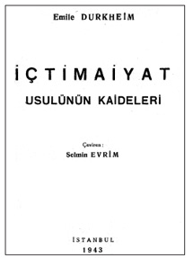
Durkheim’in Les règles de la méthode sociologique adlı eseri
ancak 1943 yılında İçtimaiyat Usulünün Kaideleri başlığı altında
Selmin Evrim tarafında Türkçeye kazandırılacaktı.
Bu durumda devletin bilfiil girişimci olması son derece doğaldı.328Meşrutiyet yıllarında İttihatçıların iktisadi görüşlerinde müdahaleci eğilimler Batı’da liberal iktisada karşı tavır koymuş iktisatçılardan esinleniyordu. Friedrich List, Adam Müller, John Rae, Henry C. Carey ve Paul Cauwès bu iktisatçılar arasında yer alıyordu. Yusuf Kemal [Tengirşenk] İttihatçıların kurduğu İktisadiyyat Derneği’nde yaptığı “Cauwès’e göre milli iktisat” başlıklı konuşmasında milli iktisadın kurucuları olarak özellikle List, Carey ve Müller’i gösteriyordu. “Milli iktisat devletin hayat-ı iktisadiyyeye müdahalesini tamamıyla kabul ve milletin kuvve-i müstahsalasında vahdeti temin için devletin bizzat her nevi ve surette işe karışmasını iltizam ediyor”du.329Cauwès, III. Cumhuriyet Fransası’nın önde gelen pozitivist iktisatçılarındandı. Ulusal ve pozitif siyasal iktisadın, bireycilik ve toplumculuğun aşırı uçları arasında toplumsal ilerlemeyi hedefleyerek kimi kez kişisel güçlere kimi kez toplumsal güçlere yaslanarak her türlü mutlak kuramı yadsıyarak yolunu çizeceğini savunuyordu.330Osmanlı aydını dil engeli nedeniyle Alman Friedrich List’in korumacı, müdahaleci görüşlerine Fransız Paul Cauwès aracılığıyla ulaşıyordu.
II. Meşrutiyet yıllarında müdahaleci iktisat görüşleri giderek revaç buldu. Cihan Harbi yıllarında müdahalecilik geniş bir kesimce benimsenmişse de daha önceleri de bu tür bir anlayıştan yana olanlar vardı. Devlet müdahalesini, bir tür devletçiliği savunanlar arasında Nüzhet Sabit’in ayrı bir konumu vardı. Meşrutiyet’le birlikte ilk heyecanla İttihat ve Terakki’ye girmiş, sonra düş kırıklığına uğrayarak Cemiyet’ten ve masonluktan ayrılarak ilk solidarist derneği, “Teavün-i İctimaî”yi kurmuştu. Devletçilik Nüzhet Sabit’in yazınında “hükûmetçilik” olarak yansımıştı. Londra ve Paris’te belediyeciliği, kooperatifleri tetkik etmiş, devletin üreticiliğine inanmıştı. “Memlekete merkeziyet lazımdı.” Teşebbüs-i şahsiyi kabul etmesine rağmen iktisadi siyasette hükûmete “büyük bir hisse-i muavenet ayrılması” taraftarıydı. Liman, demiryolları, şoselerin ve bunlara benzer büyük girişimlerin iç ve dış borçlarla devlet tarafından gerçekleştirilmesi gerekirdi.331Nüzhet Sabit Cihan Harbi yıllarının kendisini haklı çıkardığını, hükümetlerin üretici olmaya mecbur kaldıklarını, fakir halkı korumak, açları susturmak için devletin üretim ve tüketim işleriyle doğrudan ilgilenmesi gerektiğini söylüyordu.
Cihan Harbi yıllarında gündeme gelen devlet iktisadiyatı bazı çevrelerce sosyalistlikle itham edilmişti. Bu tür ithamları cevaplandıran Tekin Alp, devlet iktisadiyatının ferdi iktisadı ortadan kaldırmak şöyle dursun ondan azami faydayı elde etmeye çalışacağını, devlet müdahalesinin ferdi iktisadın yerine geçmeyi düşünmediğini; ona yol göstermeyi, onu milli iktisat için en uygun alanlara sevk etmeyi amaçladığını söyleyecekti.332
282 Ali Birinci, “Mustafa Suphi’nin Hayatı ve Eserleri”, Tarihin Alacakaranlığında - Meşâhir-i Meçhûleden Birkaç Zât -2 içinde, İstanbul: Dergâh Yayınları, 2010, s. 295-305.
283 Jean-Christophe Marcel, Le durkheimisme dans l’entre-deux-guerres, Paris: Presse Universitaire de France 2001, s. 221-222.
284 Necmeddin Sâdık, “İctimaiyyat - Profesör Bouglé’nin konferansları”, Yeni Mecmua, cilt 4, sayı 74-8, 15 Nisan 1339 / 1923, s. 141-142. “Mösyö Bouglé, gerek tedrisatı, gerek yazdığı birçok eserlerle ictimaiyyata en çok hizmet etmiş mütefekkirlerden biri olduğu için, İstanbul’dan geçen bu profesörü dinlemekten Darülfünun’u ve kendimi mahrum bırakmak istemedim ve Darülfünun’da bir ders vermesini kendisinden rica ettim. Bittabii ictimaiyyattan bahsetti ve ictimaiyyatın kısa bir tarihçesiyle bugünkü iki mühim cereyanı anlattı.”
285 Bu derginin Latin harfleriyle çevrimyazısı için bkz. İçtimâiyât Mecmuası, sayı 1-6, 1917, yayına hazırlayan Prof. Dr. Mehmet Kanar, İstanbul: Edebiyat Fakültesi Basımevi, 1997.
286 Émile Durkheim, “Aile İctimaiyyatı: Fucûrun Nehyi ve Menşe’leri”, mütercimi: Necmeddin Sâdık, İctimaiyyat Mecmuası, sene 1, sayı 1, Nisan 1917, s. 37-48, sayı 2, Mayıs 1333, s. 73-96, sayı 3, Haziran 1333, s. 117-133, sayı 4, Temmuz 1333, s. 179-190, İstanbul: Matbaa-i Âmire, 1333.
287 Émile Durkheim, “İctimaiyyat Tarihi: On Dokuzuncu Asırda Fransa’da İctimaiyyat - Birinci devre: Saint Simon ve Auguste Comte”, mütercimi: Necmeddin Sâdık, İctimaiyyat Mecmuası, sayı 4, Temmuz 1333, s. 157-166, “İctimaiyyat Tarihi: On Dokuzuncu Asırda Fransa’da İctimaiyyat - İkinci devre 1870’ten 1900’e kadar”, sayı 5, Ağustos 1333, s. 233-237; “İctimaiyyat Tarihi: On Dokuzuncu Asırda Fransa’da İctimaiyyat - İkinci devre - ma’bad ve son”, sayı 6, Eylül 1333, s. 257-264.
288 Émile Durkheim, “İlm-i Terbiyye ve İctimaiyyat”, mütercimi: Sadreddin, İctimaiyyat Mecmuası, sayı 5, Ağustos 1333, s. 206-224.
289 Émile Durkheim, İctimaî Taksim-i Amel, İstanbul; Matbaa-i Amire 1340. Türkiye Cumhuriyeti Maarif Vekâleti neşriyatından aded: 4. Telif ve Tercüme Heyetince tetkik ve kabul edilmiştir.
290 Émile Durkheim, The Division of Labor in Society, Translation of 1893 (1902) by G. Simpson, New York: Macmillan, 1933.
291 Émile Durkheim, Din Hayatının İbtidaî Şekilleri, çev: Hüseyin Cahid [Yalçın], 2 cilt, İstanbul: Tanin Matbaası, 1923-1924. Oğlumun Kütüphanesi.
292 Émile Durkheim, Ahlak Terbiyesi, Mütercimi: Hüseyin Cahid, İstanbul: Devlet Matbaası, 1927. 271 sayfa. Maarif Vekâleti Milli Talim ve Terbiye Dairesi’nin 1 Kânun-ı sani 1927 tarih ve 10 nümerolu emr-i tamimiyle birinci defa 2025 nüsha olarak basılmıştır.
293 Émile Durkheim, L’Education morale, (Published posthumously) P. Fauconnet’nin önsözüyle, Paris: Alcan, 1925.
294 Bu eserin daha sonraki baskıları: Émile Durkheim, Ahlaksal Terbiye, çev: M. F. Bezirci, cilt 1, İstanbul: Acun B., 1938; ve Émile Durkheim, Ahlak Eğitimi, çev: Oğuz Adanır, İzmir: Dokuz Eylül Üniversitesi Yayınları, 2004.
295 Émile Durkheim, Moral Education: A Study in the Theory and Application of the Sociology of Education, translation of 1925 by Everett K. Wilson and Herman Schnurer and edited with introduction by Everett K. Wilson, New York: Free Press of Glencoe, 1961.
296 Émile Durkheim, Edükasyon ve Sosyoloji, mütercimi: M. Fehmi, Ahmet Kâmil ve Şeriki Matbaası, 1928.
297 Émile Durkheim, Education et sociologie, Giriş: P. Fauconnet, Paris: Alcan, 1922. Kitabın önsözü şu satırlara yer veriyordu: Mukaddime - Durkheim aynı zamanda sosyolojiyi olduğu gibi pedagojiyi bütün hayatı müddetince tedris etti. Bordeaux’nun Edebiyat Fakültesi’nde 1887-1902 senesine kadar haftada bir defa olmak üzere pedagoji hakkında bir saat tedrisatta bulundu. Sâmi’in bilhassa ilk tedrisat muallimleri idi. Sorbonne’da 1902’de Fenn-i Terbiye kürsüsünde vekâleten, 1906’da asaleten Mösyö Ferdinand Buisson’u istihlaf etti. Vefatına kadar tedrisatının bir ve ekseriye iki sülüs kısmını umumî kurlar, ilk mekteb muallimleri için konferanslar, darülmuallimin-i âliyye talebelerine dersler olmak üzere pedagojiye tahsis etti. Pedagojiye ait bu telifi heman kâmilen gayr-ı matbudur. Şüphesiz sâmi’lerden hiçbirisi onun vüs’atını kavrayamadığından burada muhtasaran göstermek istiyoruz.”
298 Émile Durkheim, Education and Sociology, Translation of 1922 by S. D. Fox Parsons, Glencoe: Free Press of Glencoe, 1956.
299 Émile Durkheim, Leçons de sociologie – Physique des moeurs et du droit, İstanbul: Çituri Biraderler Basımevi, Istanbul: Publications de l’Universite d’Istanbul – Faculte de Droit, Introduction de Georges Davy, avant-propos de Hüseyin Nail Kubalı, 1950 [1952]. Bu eserin Türkçesi: Émile Durkheim, Sosyoloji Dersleri, çeviren: Ali Berktay, İstanbul: İletişim Yayınları, 2006. Önsöz: Hüseyin Nail Kubalı; Giriş: Georges Davy.
300 Émile Durkheim, Professional Ethics and Civic Morals, Translation by C. Brookfield, Londra: Routledge & Kegan Paul, 1957.
301 Hilmi Ziya, “İntihar”, Felsefe ve İctimaiyyat Mecmuası, yıl 1, sayı 1, Mayıs 1927, s. 62-65; yıl 1, sayı 2, Haziran 1927, s. 139-143; yıl 1, sayı 3, Temmuz 1927, s. 212-216. Hilmi Ziya, makalenin giriş kısmında Durkheim’in İntihar adlı kitabının önemini vurguluyordu: s. 62. “Son günlerde intiharın nazar-ı dikkati celb edecek derecede çoğalması muharrirlerimizi bu mesele etrafında düşünmeğe sevk etti, Hayat mecmuasında Necmeddin Sadık Bey, intihar hakkında bir müsahabe yazdığı gibi, yine bu mecmuanın 20. nüshasında Mösyö Bonafous da, ‘İntihar ve Cinnet’ ismindeki makalesiyle bu mevzu’u tedkik etti. Nihayet, Ziya Gökalp’in Harb-ı Umumî esnasında Yeni Mecmua’da intihara aid yazdığı bir makaleyi de zikredecek olursak memleketimizde bu mesele hakkındaki ciddi mütalaaları toplamış oluruz. Bütün bu makale ve tetkiklerde esas olan ictimaiyyat usulü Durkheim’in intihar hakkındaki bu büyük eseridir. Gerek mezkûr eserin zaman ve tebeddüller fevkindeki kıymeti itibariyle, gerekse bütün memleketi yakından alakadar eden bu ictimai hastalığın sebeblerini ve tedavi yollarını bulmak ihtiyacıyla mecmuamızın ilk nüshasına, mümkün olduğu kadar kısa ve veciz bir hülasasını derc etmeyi muvafık gördük. Hiçbir şahsi kanaat ilave etmeden, bahislerin ihtiva ettiği ana fikirleri naklediyoruz.”
302 Émile Durkheim, İntihar – Toplumbilimsel İnceleme, Fransızcadan çeviren: Özer Ozankaya, Ankara: Türk Tarih Kurumu Basımevi, 1986. Sonraki baskıları: Émile Durkheim, İntihar, çeviren: Özer Ozankaya, Ankara: İmge Kitabevi, 1992 ve son olarak Cem Yayınevi, 2011. İntihar’ın bir başka çevirisi: Émile Durkheim, İntihar, çeviren Zühre İlkgelen, Pozitif Yayınları, 2013.
303 Emin Özdemir, Türk ve Dünya Edebiyatı Üzerine Notlar, Ankara, 1979, s. 99-101.
304 Gökalp’in düşüncesinde Osmanlı esnaf geleneği olarak nitelediğimiz yönelimleri Şerif Mardin ümmet strüktüründe aramaktadır. Mardin Din ve İdeoloji adlı yapıtında bu olguyu şu satırlarla vurgulamaktadır: “...Türk milliyetçiliğinin temellerini kurmuş olanlar ve bu arada Ziya Gökalp ümmet strüktüründen sandıkları kadar uzaklaşmamışlardır. Ziya Gökalp’in dine önem vermesi, tesanütçülük akımına bağlanmasının bundan ileri gelen bir yönü olduğu düşünülebilir. Gökalp, bir dereceye kadar bunun farkındaydı ve mümkün olduğu kadar Türkiye’nin strüktürlerini çok başka türlü bir tesanüt prensibi olarak gördüğü milliyetçilikte aramıştı. Fakat gene burada Gökalp, Durkheim’in sosyolojisine kendi toplumunun ideolojik gözlükleriyle bakmıştı. Zira Durkheim’in o kadar önem verdiği işbölümü yerine Ziya Gökalp çok daha fikirsel bir yapı olan milliyetçiliği geçirmişti. Herhalde, Ziya Gökalp’ten mülhem olan, Türkiye’de sınıf ayrılıkları olmadığı ve olmayacağı fikri, Cumhuriyet seçkinlerince kullanıldığı zaman eylemlerinin ürünü, fonksiyonu ümmet’e benzer bir toplumsal hissin toplum bağı olarak sürdürülmesi olmuştur.” (Şerif Mardin, Din ve İdeoloji, Ankara, 1969, s. 121)
305 Gökalp “İçtimaî tabakalar itibariyle cemiyetin altı merhaleden geçtiğini” ileri sürer: Semiyye devri, kast devri, tarik devri, derebeylik devri, sınıf devri, meslek devri. (Ziya Gökalp, “Halkçılık”, Yeni Mecmua, sayı 32, 14 Şubat 1918, s. 102- 104). Diğer bir yazısında “hayat-ı iktisadiyye tarihinde muhtelif devreler”i kölelik, servaj, proletarya ve kooperatif devreleri olarak sıralar. (Ziya Gökalp, “Millî iktisat nasıl vücuda gelir?”, İktisadiyyat Mecmuası, sayı 35, 24 Teşrin-i sani 1332/1916, s. 1-3)
306 “Bir cemiyetin içinde, muhtelif sınıflar, birbirini istismar yahud imha etmeye çalışır. Mesela dünyanın her yerinde eşraf sınıfı rençber sınıfını istismarla meşguldür. Buna karşılık olmak üzere Avrupa’nın başka ülkelerinde nazariye halinde, bugünkü Rusya’da ise ameliye halinde, amele sınıfı eşraf tabakasını mahvetmeye çabalıyor. Demek ki bir cemiyetin içindeki sınıflar, aralarında uzlaşma imkânı bulunmayan düşman zümreleri halindedir. Halbuki bir cemiyetin muhtelif meslek zümreleri birbirine rakip ve düşman olacakları yerde, bilakis yekdiğerine son derece muhtaç ve dostturlar. Bir cemiyette terzi kunduracısız, kunduracı terzisiz, fırıncı kasapsız, kasap fırıncısız, şair filozofsuz, filozof şairsiz, doktor avukatsız, avukat doktorsuz kalmayı hiçbir zaman isteyemez. Bütün ictimai meslekler birbirinin lazım ve melzûmudur. O halde sınıflar kalkıp da onların yerinde meslek zümreleri kuvvetli bir surette teşekkül edince ictimai Darvinizm iflas ederek, cemiyet içinde dahilî sulh hüküm sürmeye başlar.” Ziya Gökalp, “Milletçilik ve beynelmilliyetçilik”, Yeni Mecmua, sayı 35, 14 Mart 1918, s. 162.
307 Bu bildiri 1931 Cumhuriyet Halk Fırkası programında halkçılık ilkesi olarak benimsenecekti: “Türkiye Cumhuriyeti halkını ayrı ayrı sınıflardan mürekkep değil ve fakat ferdî ve ictimai hayat için işbölümü itibariyle muhtelif mesaî erbabına ayrılmış bir camia telakki etmek esas prensiplerimizdendir. Çiftçiler, küçük sanat erbabı ve esnaf, amele ve işçi, serbest meslek erbabı, sanayi erbabı, tüccar ve memurlar Türk camiasını teşkil eden başlıca çalışma zümreleridir. Bunların her birinin çalışması diğerinin ve umumî camianın hayat ve saadeti için zarurîdir. Fırkamızın bu prensiple istihdaf ettiği gaye sınıf mücadelesi yerine ictimai intizam ve tesanüt temin etmek ve birbirini nakzetmeyecek surette menfaatlerde ahenk tesis eylemektir.” Ayın Tarihi, cilt 25, sayı 86, Mayıs 1931, s. 7560.
308 Ziya Gökalp, “Halkçılık”, Yeni Mecmua, cilt 2, sayı 32, 14 Şubat 1918, s. 102-104. Gökalp’in “Halkçılık” başlıklı makalesine birçok makalemizde gönderme yapmıştık. Ama makalenin tümü ilk kez Latin harfleriyle Ocak 2007 tarihli Teori dergisinde [sayı 204, s. 56-62] M. Erman Aslanoğlu’nun çevirim yazısıyla yayımlandı.
309 Fındıkoğlu, Sosyalistler XIII; Ziya Gökalp, İstanbul: Türkiye Harsî ve İçtimaî Araştırmalar Derneği, 1966; Fındıkoğlu, “Ziya Gökalp ve Sosyalizm”, 1964-1965 Ders Yılı Sosyoloji Konferansları – Beşinci Kitap, İstanbul İ.Ü. İktisat Fakültesi Neşriyatı, ty., s. 42-70.
310 M.[uslihiddin] Adil (Selanik Mekteb-i Hukuk müdürü - İlm-i İktisad ve Hukuk-ı idare muallimi), İktisad Dersleri - Birinci Kitap, Selanik: Zaman Matbaası, 1328.
311 Marcel Fournier, Émile Durkheim (1858-1917), Paris: Fayard, 2007, s. 431-434.
312 “Son zamanlarda sosyalizmden şeklen ayrı, fakat esas itibariyle müşterek bir meslek-i mahsus vücud bulmuştur ki bu, ‘teavün mesleği’dir. Bu meslek erbâbı diyorlar ki: Efrad-ı beşer, bir aile teşkil ederler. Bu aile azasından birinin terk-i bedenden diğeri de dolayısıyla müteessir olur. Binaenaleyh muhtaç-ı muavenet olan uzvun imdadına şitâb etmek bir vazifedir. Yani teavün bir emr-i mecburîdir. Bu mecburiyet bizim menâfiimize muvafıkdır, çünkü duçar-ı sefalet olanların imdadına yetişmeyecek, onların hastalıklarını tedavi, ahlaksızlıklarını iale etmeyecek olursak bilahare bundan artık bizim de maddeten müteessir olmamız tabiidir. Biz de eslâfımızın bize terk ve ithaf eyledikleri maddi ve manevî sermayelere, bizim için ihtiyar ettikleri azim fedakârlıklara karşı büyük bir deyn-i şükran altında bulunuyoruz. Bu deyni onlara eda edemeyiz. Fakat hemcinslerimizden muhtac-ı muavenet olanlara ifa edebiliriz; bu suretle hüsn-i adalet ve insaniyetimizi izhar eylemiş oluruz. Bu meslek Fourrier, Tolstoy gibi taraftarlar bulmuştur. Bu mesleği zahiren sosyalizmden tefrik eden nukât solidaristlerin mülkiyet ve veraset hakkını kabul eylemeleridir. Fakat nisbî bir müsavat husule getirmek emeliyle kavilerin zayıflara karşı bir muavenet-i mecburiyye ile mükellef olduğunu kabul eylediği cihetle hakikatte yine sosyalizm esaslarından büsbütün ayrılmamaktadır.” M.[uslihiddin] Adil (Selanik Mekteb-i Hukuk müdürü - İlm-i İktisad ve Hukuk-ı idare muallimi), İktisad Dersleri - Birinci Kitap, Selanik: Zaman Matbaası, 1328, 80-82.
313 Solidarizm için bkz. La Grande Encyclopédie, solidarité maddesi; Léon Bourgeois, Solidarité, Paris, 1897; J.E.S. Hayward, “The Official Social Philosophy of the French Third Republic: Léon Bourgeois and Solidarism”, International Review of Social History, vol. 6, 1961, s. 19-48; J.E.S. Hayward, “Solidarity: The Social History of an Idea in Nineteenth Century France”, International Review of Social History, vol. 4, 1959, s. 261-284; Steven Lukes, Émile Durkheim, Penguin Books, 1975, s. 350-354.
314 “Türk hukukundan tabiatıyla doğmuş millî bir meslek vardır ki ismine solidarizm, tesanütçülük denilebilir. Fertçiler yalnız ferdî mülkiyeti, ictimaiciler yalnız ictimai mülkiyeti kabul ettiği halde, tesanütçüler bu iki mülkiyetin her ikisini de kabul ediyorlar. Bunlara göre, Osmanlı arazi kanunnamesindeki tasarruf ferdî mülkiyetten, rakabe ise ictimai mülkiyetten ibarettir. Fakat tesanütçüler, bu iki türlü mülkiyeti araziye hasretmiyorlar. İstihsal vasıtası olan diğer mülklere de teşmil ediyorlar. Mesela, ormanlar, sular, madenler, şimendöferler, vapurlar gibi sınaî fabrikalar da arazi gibi iki mülkiyete tabidir. Bir fabrika da, arazi gibi muayyen bir zamanda işletilemezse mahlul kalmalı, yani onun üzerinde bulunan ferdî tasarruf sakıt olmalıdır. Çünkü Türk hukukuna göre, ferdî tasarruf bir tapu, yani ictimai bir memuriyet mahiyetindedir. Bundan başka, devlet lüzum görürse rakabesi itibariyle arazi ve fabrikaları, fertlere ait tasarruf bedellerini vermek şartıyla istimlak edebilir. Bu tarikle bütün istihsal vasıtalarını ictimaileştirmek, yahud nâ-ehil ellerden alıp ehliyetli ellere vermek mümkündür... Hakikî halkçılık ferdî hürriyetle ictimai adaleti, aynı zamanda ferdî mülkiyetle ictimai mülkiyeti telif etmek usulünden ibarettir.” Ziya Gökalp, “Rusya’daki Türkler ne yapmalı?”, Yeni Mecmua, sayı 38, 4 Nisan 1918, s. 234.
315 Ziya Gökalp, “Rusya’daki Türkler ne yapmalı?”, Yeni Mecmua, sayı 38, 4 Nisan 1918, s. 243.
316 “Bir milletin dahilinde fertçilikle ictimaiciliği telif için ferdî mülkiyetle ictimai mülkiyeti beraberce kabul etmek, ferdî hürriyetle ictimai adalete müsavî bir kıymet vermek iktiza eder. İçtimaî mülkiyet kabul edilerek cemiyetin teşebbüslerinden husule gelen fazla temettülerin (plus value) cemiyete aidiyeti temin edildikçe bu menbâdan husule gelecek azîm varidat, ictimai adalet teşkilâtlarına bâligan-mâ-belağ temin ederek mağdur sınıfları sefaletten ve istikbalin meşkûkiyetinden kurtarabilir. Umumî sigorta, muavenet-i amme, basîret-i ictimaiyye teşkilatları ve maarifin meccanen ve leyli bir surette umum çocuklara teşmili vesaire bunun dahilindedir.” Ziya Gökalp, “İçtimaî mezhepler ve ictimaiyyat”, Yeni Mecmua, sayı 26, 3 Kânun-ı sani 1917 (Takvim reformuna göre 1918 olmalı Z.T.), s. 503.
317 Ziya Gökalp, “İctimai mezhepler ve ictimaiyyat”, Yeni Mecmua, sayı 26, 3 Kânun-ı sani 1917 (Takvim reformu nedeniyle 1918 olmalı Z.T.), s. 503.
318 Fransız sosyolojizminden esinlenen Ziya Gökalp’in “mefkûreci” ulusçuluğuna karşı, Alman sosyal demokrat düşüncesinden etkilenen Tekin Alp, ulusçuluğu maddi tabana oturtma çabasındaydı: “Türkler... tam manasıyla millet haline gelmek, millî vahdetin teşkil ettiği kuvvete mazhar olmak için evvel emirde menâfî-i maddiye ve hazâin-i maneviyelerini tamamıyla birleştirmeye çalışmalıdırlar. Türkçülük cereyanının zuhurundan beri hazâin-i maneviyeyi teşkil eden lisan, edebiyat, sanat ve emsali sahalarda birlik tesis etmeye başlamışsa da menâfî-i maddiye ile hazâin-i maneviye cisim ile ruh kabilindendir ki birbirinden ayrılmazlar. Ayrılınca her ikisinde hayat söner. Hazâin-i maneviyenin birliği millî hars ile kaim olduğu gibi menâfî-i maddiyede iştirak da ancak millî iktisatla vücut bulur.” Tekin Alp “Millî iktisada doğru”, İktisadiyyat Mecmuası, sayı 1, 8 Şubat 1331, s. 1
Tekin Alp, İttihat ve Terakki’nin millî iktisat politikasını “iktisadî solidarizm” diye adlandırmakta ve sermayenin bu tesanüdü sağlamaktaki işlevini şöyle ifade etmekteydi: “Fert, aile ve cemaat iktisatlarını birbirlerine bağlamak hususunda en mühim âmil sermayedir. Sermaye sayesinde muhtelif kuvvetler, muhtelif iktisat amilleri bir araya gelir, müctemian milletin refah ve saadetine hizmet ederler.” Tekin Alp, “İttihat ve Terakki Fırkası’nın iktisadî faaliyeti -1-”, İktisadiyyat Mecmuası, sayı 30, 7 Teşrin-i evvel 1332/1916, s. 1.
319 İttihad ve Terakki Fırkası 1332 senesi kongre raporu, İstanbul, 1332.
320 “Endividüalist veyahud liberal meslek-i ictimaisi erbabı, tezayüd-ü kıyem hasılatını ferdî mülkiyete verirler. Fakat ictimai siyaset taraftarları tezayüd-ü kıyem hasılatına tamamiyle ferdî mülkiyet nazarıyla bakamazlar. İçtimaî siyaset veyahud tesanütçülük taraftarları ferdî mülkiyet yanında bir de cemiyet mülkiyeti nazariyesi kabul ederler. Ferdin elinde bulunan servetlerin bir kısm-ı küllîsi cemiyete aittir ve her ne surette olursa olsun cemiyetin huzur ve refahını, cemiyetin itilâsını temin etmeye mahsus olmalıdır. Bu nazariye tesanütçüler tarafından alelıtlak kabul edilmiştir. Tezayüd-ü kıyem ise esasen fertten değil cemiyetten sâdır olan esbâb ve avâmil tesiriyle husule geldiği için doğrudan doğruya cemiyete ait olmalıdır.” Tekin Alp, “Tesanütçülük -7- Harp zenginleri meselesi”, Yeni Mecmua, sayı 42, 2 Mayıs 1918, s. 313.
321 Tekin Alp, “Tesanütçülük -8- Tesanütçülüğün gayesi”, Yeni Mecmua, sayı 43, 9 Mayıs 1918, s. 336-337.
322 “Rusya’da birtakım mefkûreci adamlar kendi zu’mlarınca [batıl inançları] mutlak hak prensibini tatbike kalkıştılar, cemiyetin esaslı teşkilatını altüst etmekten başka bir şey yapamadılar. Rusya’daki mefkûreciler ferdî mülkiyeti inkâr etmeyip tesanütçüler gibi ferdî mülkiyete bir de cemiyet mülkiyetini ilave etmek suretiyle işe girişip mevcudu yıkmaya kalkışmasaydılar, ihtimal ki bir dereceye kadar muvaffak olurlardı.” Tekin Alp, “Tesanütçülük -7- Harp zenginleri meselesi”, Yeni Mecmua, sayı 42, 2 Mayıs 1918, s. 314.
323 Tekin Alp, “Tesanütçülük -5- Yeni istikamet”, Yeni Mecmua, sayı 37, 28 Mart 1918, s. 205.
324 Tekin Alp, “Tesanütçülük - Solidarizm”, Yeni Mecmua, sayı 26, 3 Kânun-ı sani 1917 (Takvim reformu nedeniyle 1918 olmalı Z.T.), s. 518.
325 Tekin Alp, “Demokrasinin gayesi”, Yeni Mecmua, sayı 56, 8 Ağustos 1918, s. 68.
326 Tekin Alp, “Tesanütçülük -5- Yeni istikamet”, Yeni Mecmua, sayı 37, 28 Mart 1918, s. 207.
327 Tekin Alp, a.g.e., s. 207.
328 “Hükümet ve teşebbüsât-ı hususiye -3”, İttihad ve Terakki, sayı 39, 5 Teşrin-i sani 1324, s. 4. Dizinin ilk iki yazısı: sayı 23, 27 Eylül 1324, s. 4 ve sayı 24, 29 Eylül 1324, s. 4.
329 Yusuf Kemal, “Cauwès’e göre milli iktisat”, İktisadiyyat Mecmuası, sayı 39, 12 Kânun-ı sani 1332, s. 2.
330 Paul Cauwès, Précis du cours d’économie politique, cilt 2, Paris, 1882, s. 652.
331 “Vazifenin mesleği”, Vazife, numara 1, 9 Kânun-ı evvel 1911, s. 1.
332 Tekin Alp, “Harpten sulha intikal iktisadiyyatı -1- Devlet iktisadiyatı”, İktisadiyyat Mecmuası, sayı 62, 16 Ağustos 1333, s. 3.